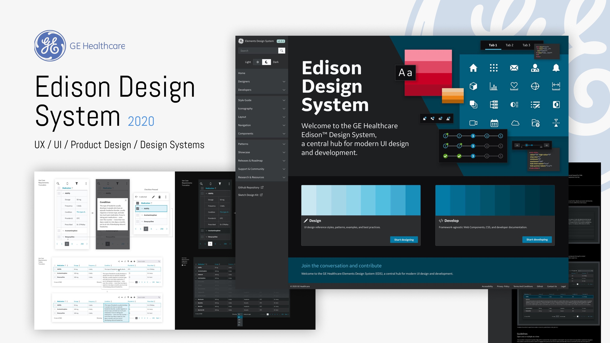
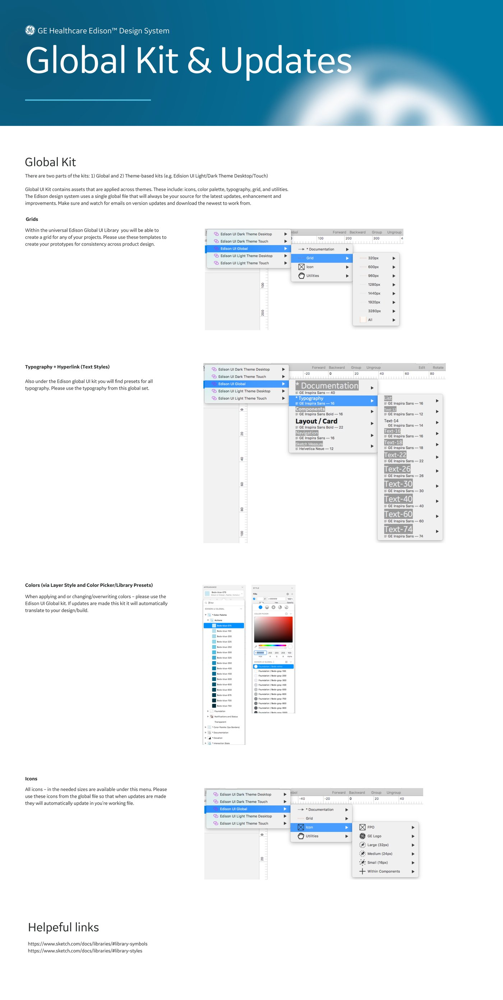

Edison: one system for 40+ clinical products
The design system that unifies GE Healthcare's imaging, monitoring and clinical workflow software. I contributed the component libraries, reusable modules and the documentation that let dozens of product teams adopt it without translation loss.

Light, dark, desktop, touch. One semantic layer.
Clinical software runs in a radiology reading room at 2 am and on a bright surgical floor the same day. Edison ships light and dark themes across desktop and touch, resolved from shared foundations so components never fork.
Four targets, one source
Edison UI Dark Theme Desktop, Dark Theme Touch, Light Theme Desktop, Light Theme Touch, all drawn from one global library.
Parity by construction
One component set, re-themed. A change to a foundation reaches every theme at once.
Clinical palettes
Color tiers for notification and status that hold contrast in both themes, because legibility here is a safety requirement.
Device scale
Touch surfaces at device scale, with hit areas and spacing resolved in the library rather than per product.
Most of the work was getting forty teams to use it
The team's work earned the 2020 Red Dot award for interface design, with Fast Company Innovation by Design and dmi:DVA recognition the same year. I contributed the libraries, modules and documentation behind that work, alongside designers, engineers and accessibility specialists across GE Healthcare. The awards were the team's.
Edison is still my reference for how governance works at that scale, and for the lesson I bring to every client system: a system is worth what teams adopt.
